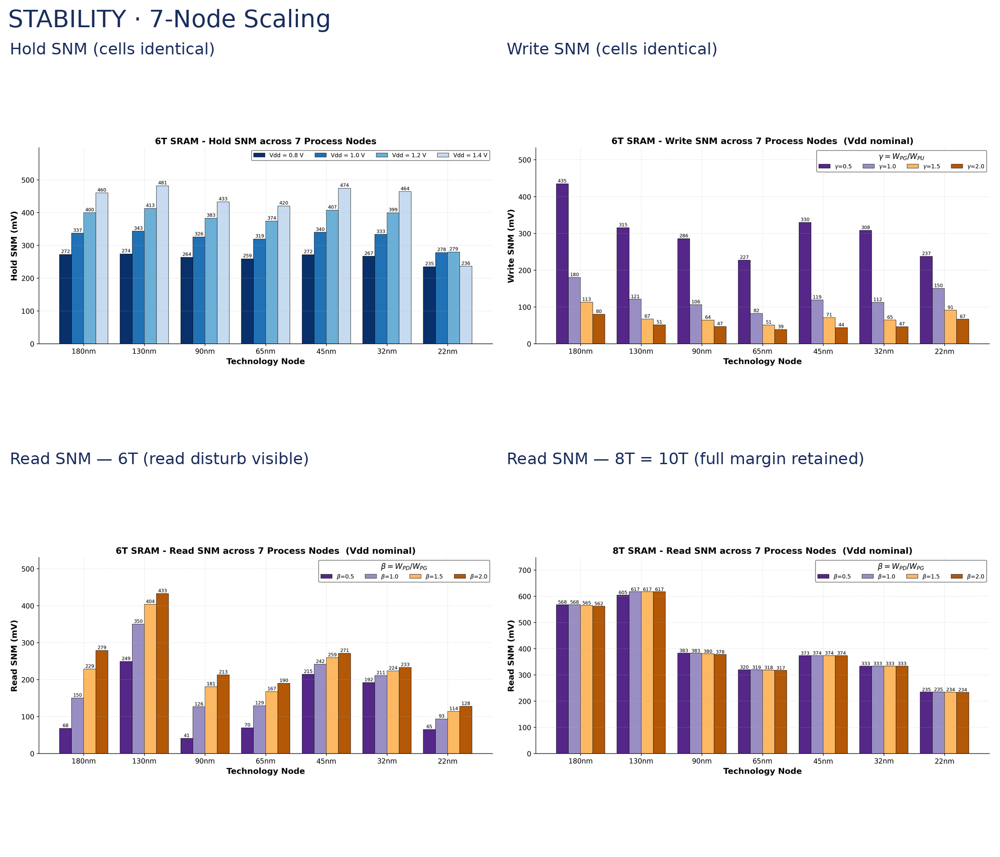
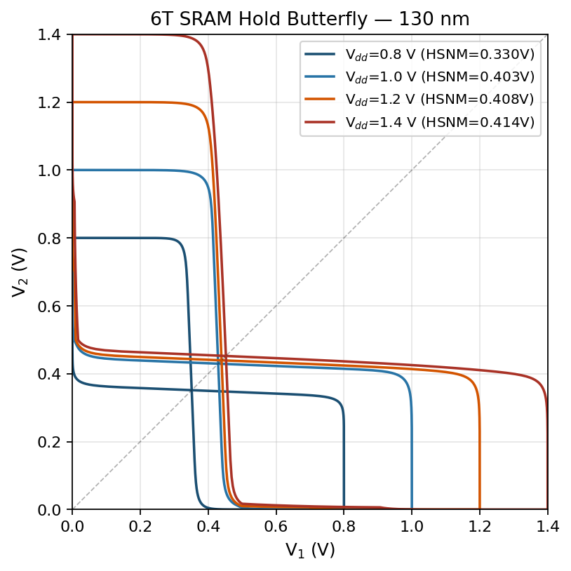

Quantifying the trade-off between read stability and write-ability as CMOS scales down, across five figures-of-merit and seven process nodes.

Hold, read, and write static noise margins across seven process nodes for the 6T, 8T and 10T cells.
CMOS scaling and the rising on-die cache fraction of modern processors have made static random-access memory (SRAM) cell stability a first-order design constraint. The canonical six-transistor (6T) cell suffers from a well-known conflict between read stability (favored by a large pull-down/access ratio β) and write-ability (favored by a small pull-up/access ratio γ). This work quantifies the cost of stability across the 6T, 8T, and 10T topologies through five complementary figures-of-merit (FOMs): hold, read, and write static noise margins (HSNM/RSNM/WSNM); the static N-curve current and voltage margins (SINM, SVNM); and the read access time Trd. Each FOM is swept over (β, γ) and across seven process nodes from 180 nm down to 22 nm using the SkyWater 130 nm Open PDK and the Predictive Technology Model.
Three results emerge. (i) HSNM and WSNM are properties of the shared storage core and write path: they are numerically identical across all three topologies at every node (HSNM falls from 460 mV at 180 nm/1.8 V to 235 mV at 22 nm/0.8 V for all cells). (ii) The 6T cell loses 27-67% of its hold margin under read at β = 1 while the 8T/10T cells fully preserve it; at 22 nm, RSNM collapses from 235 mV (hold) to 93 mV for the 6T but stays at 235 mV for the 8T/10T. (iii) The 10T's separate read port reduces Trd by approximately 2× at every node (103 ps versus 225 ps at 22 nm).
The 8T cell therefore offers the best stability/area equilibrium for general-purpose caches at scaled nodes, while the 10T cell (a differential cell whose single-NMOS read-discharge paths are PMOS-pass-gated from the storage nodes onto a row-controlled Vread rail) is preferred where read-write decoupling and a fast differential read must be combined with reliable near-threshold operation.

Static noise margins were extracted from butterfly curves (the largest square fitting inside the cell's voltage-transfer lobes) and the N-curve method, swept across supply voltage, transistor sizing ratios, and technology node. Read access time was characterized to capture the speed paid for each cell's extra stability.
The comparison makes the trade-off explicit: the 8T and 10T cells buy back the read margin the 6T cell loses to read-disturb at scaled nodes, but at the area and access-time cost of the extra transistors: the literal "cost of stability."
Course: ESE 5760, University of Pennsylvania
Topology: 6T / 8T / 10T SRAM
Nodes: 180 nm → 22 nm (7 nodes)
Team: A. Altunkaya, D. Deliakidis, K. K. Xiao